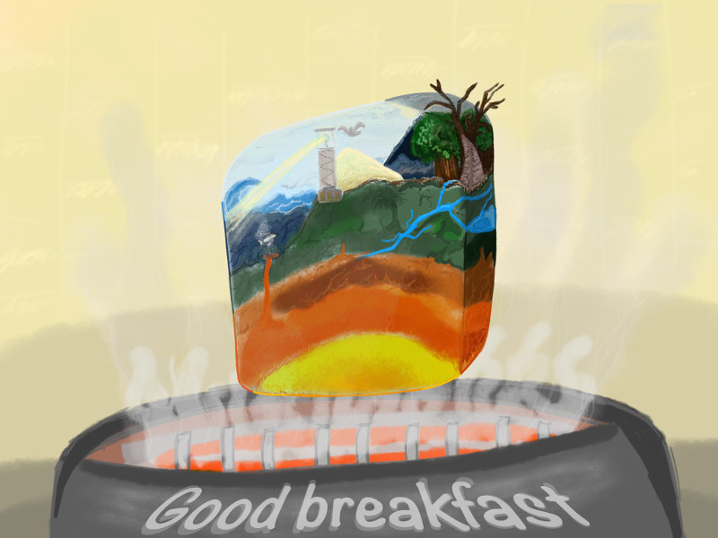

Inktober 2018 - J.31 : Tranche
Rien de tel qu’une bonne tranche de brioche pour bien démarrer la journée. Voici la métaphore illustrée de la destruction et de la transformation du monde par l’homme, qui le dévore au petit-déjeuner.

Il s’agit du dernier dessin du défi et globalement, je pense que j’ai fait quelques progrès. D’abord, je peux affirmer que si je suis motivée et que je m’applique, je peux créer quelque chose de beau, comme la scène du temple japonais. Ensuite, j’ai appris à utiliser plusieurs outils du logiciel de dessin Sketchbook alors que je n’avais jamais fait de dessin numérique auparavant (sauf quelques essais pour ma BD). Et puis certains jours, j’ai réussi à travailler une bonne composition de l’image.
Ce défi était une bonne expérience. Il faut que je m’efforce de continuer la pratique du dessin.